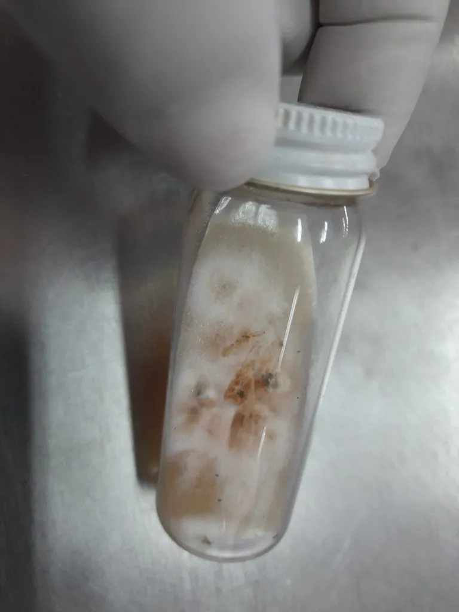

真菌 · 真菌界
申克孢子丝菌 Sporothrix schenckii

双相型真菌，菌落初白后转褐，经皮肤微小伤口侵入引起孢子丝菌病，表现为沿淋巴管排列的串珠状结节。
- 分类
- 门子囊菌门纲粪壳菌纲目长喙霉目科长喙霉科属孢子丝菌属
- 栖息环境
- 土壤、腐木、苔藓、泥炭与植物刺上，温暖潮湿处常见
- 地理分布
- 世界性分布，中国各地有散发病例，园艺与农业人群多见
- 保护级别
- 暂无评估；作为环境腐生菌广泛存在
物种志
申克孢子丝菌为双相型真菌：室温下呈菌丝相，菌落初白色、后转为褐色至黑色，表面皱褶，镜下为细长分枝的有隔菌丝与成簇的小分生孢子；在人体温度下转为酵母相，形成雪茄形酵母细胞。
申克孢子丝菌广泛存在于土壤、腐木、苔藓与玫瑰刺等植物材料中，是土壤腐生菌。该菌在土壤中可长期存活，雨后孢子易扩散。人经皮肤微小伤口（如被刺扎伤、接触泥炭）感染，局部形成无痛结节，随后沿淋巴管出现一串结节，即孢子丝菌病；吸入孢子偶可引起肺部感染，免疫低下者可播散。它不人传人。防治以避免徒手接触腐木、泥炭、玫瑰刺为主，园艺时戴手套；确诊需培养，治疗常用伊曲康唑等抗真菌药。
形态与习性
- 菌落室温菌丝相初白后转褐黑，表面皱褶
- 双相性体内转为酵母相，形成雪茄形细胞
- 来源土壤、腐木、苔藓、泥炭与玫瑰刺
- 感染途径皮肤伤口接触污染物，不人传人
- 所致疾病孢子丝菌病，沿淋巴管串珠状结节
- 防治园艺戴手套，确诊后抗真菌治疗
趣味知识
- 孢子丝菌病的典型表现是伤口附近出现一串沿淋巴管排列的结节，像串珠。
- 它生活在泥炭、腐木和玫瑰刺上，园艺爱好者、花农是高危人群。
- 它是双相真菌：在土里是霉菌，进入人体后变成酵母，这一转换是致病关键。
- 戴手套修剪玫瑰、接触泥炭，是最简单有效的预防办法。